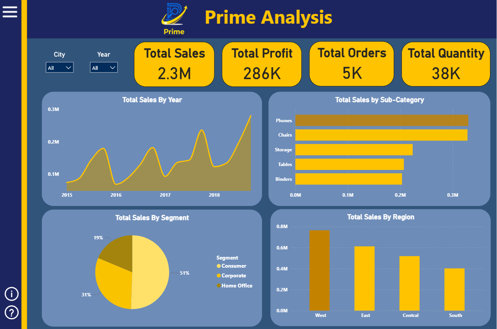
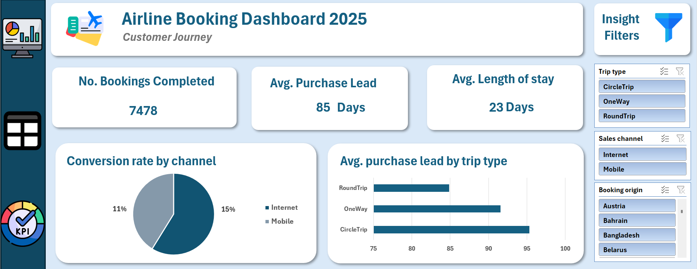
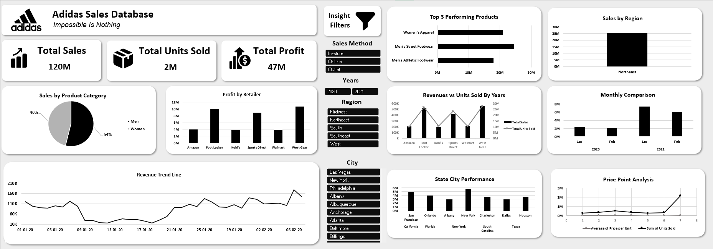

Rift Analytics Sales Dashboard
Route graduation project. An interactive Power BI dashboard to analyze sales performance, monitor KPIs, visualize regional trends, and support business forecasting using DAX and Power BI tools.
View on GitHub ↗
Apex Foods Analytics Dashboard
A comprehensive Power BI solution analyzing sales trends, inventory health, customer segmentation, and supply chain efficiency — built with a star schema data model and advanced DAX time intelligence.
View on GitHub ↗
Prime Sales Analysis
An interactive Power BI dashboard with custom KPI cards, a custom navigation bar, city and year slicers, interactive maps, and 7 report pages covering sales, profit, quantity, and customer analysis.
View on GitHub ↗
Travel Agency Booking Analysis
An interactive Excel dashboard analyzing airline booking behavior, customer trends, conversion rates, and flight performance insights.
View on GitHub ↗
Adidas US Sales Dashboard
An Excel dashboard analyzing retailer performance, regional sales trends, product performance, and profitability insights.
View on GitHub ↗Learn 2 Drive — Graduation Project (Grade: A+)
Developed the full business plan and financial feasibility study for a driving academy marketplace platform: market research, competitor analysis, market sizing (TAM, SAM, SOM), financial projections, revenue forecasts, break-even analysis, and pricing strategy to support sustainable growth.